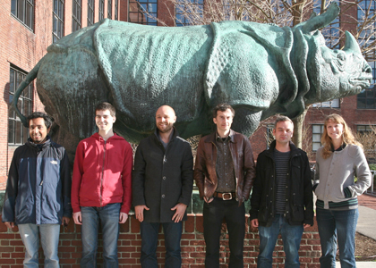

News Archives : 2012 : Reaction-Diffusion Patterning in Development
by Patrick Muller, Katherine Rogers and Alexander Schier
April 12, 2012

(L to R) Sharad Ramanathan, Drew Robson, Ben Jordan, Alexander Schier, Patrick Müller, and Katherine Rogers
How do zebras get their stripes and leopards their spots? Why is the human heart located on the left and the liver on the right? In 1952 Alan Turing proposed the reaction-diffusion model to explain how such complex patterns might emerge during development. In this model, an activator activates both itself and an inhibitor (“reaction”), and the activator is less diffusive than the inhibitor (“diffusion”). Turing, Gierer and Meinhardt showed that the specific interactions of activator and inhibitor could lead to a wide variety of patterns.
Many activator/inhibitor pairs have been discovered in the past 20 years, and it was found that manipulating their activity disrupts pattern formation during development, but the biophysical tenets of the reaction-diffusion model had not been tested for any activator/inhibitor pair. In a study published in Science today, the Schier lab provides evidence that the differential effective diffusivity of Nodal and Lefty underlies a reaction-diffusion patterning system. The publication coincides with the centenary of Alan Turing’s birth and the 60th anniversary of his seminal paper.
Previous studies from the Schier lab had suggested that the TGF-b signals Nodal and Lefty might constitute an activator/inhibitor pair postulated in reaction-diffusion models (Chen and Schier, Nature 2001, Current Biology 2002). For example, during zebrafish development, Nodal activates the transcription of itself and of the feedback inhibitor Lefty, and Nodal has a shorter activity range than Lefty. These results suggested that Nodal might be less diffusive than Lefty, one of the predictions of the reaction-diffusion model. However, these results could not exclude the possibility that Nodal and Lefty have similar diffusivities but different clearance rates. For example, Nodal might be less stable than Lefty and therefore have a shorter range than its inhibitor.
To directly test whether differential diffusivity or differential clearance regulate Nodal/Lefty signaling range, Patrick Mller, Katherine Rogers, Joon Lee, and Drew Robson in the Schier lab collaborated with Ben Jordan and Sharad Ramanathan. They first generated active fluorescent fusion proteins to visualize Nodal and Lefty. The fusion proteins were then used in photoconversion and photobleaching experiments to analyze clearance and diffusion, respectively. For example, Nodal protein was pulse-labeled by photoconverting a Nodal-Dendra2 fusion from green to red fluorescence, and its disappearance was then followed over time. These experiments showed that Nodal and Lefty have similar clearance kinetics. Conversely, Nodal-GFP was photobleached in a region of the embryo and the diffusion of fluorescent Nodal into the bleached region was then followed over time. These experiments revealed that Nodal is much less diffusive than Lefty, supporting a central tenet of the reaction-diffusion system.
Together with previous studies from the Schier lab, the biophysical measurements support the idea that Nodal and Lefty form a reaction-diffusion system, but they also raise new questions. For example, why is Nodal so much less diffusive than Lefty? Might it bind to extracellular molecules that hinder its dispersal? Intriguingly, the different diffusivities in the Nodal/Lefty system have counterparts in purely chemical reaction-diffusion systems. Patterns can be generated in a starch-loaded gel by combining an activator (iodide) with an inhibitor (chlorite) in the presence of malonic acid (Lengyel and Epstein, Science 1991). In this in vitro system, transport of the activator is hindered by binding to the starch matrix. Analogous interactions might hinder the movement of Nodal and ensure the proper patterning of embryos.
Read more in Science
[April 12, 2012]